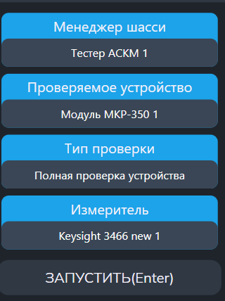

Самоконтроль модуля
Предназначена для проверки работоспособности модулей стойки.
- "Менеджер шасси" - стойка АСК-МКИ-М;
- "Проверяемое устройство" - выбор доступных модулей стойки для самоконтроля;
- "Тип проверки" - выбор теста для выбранного модуля стойки;
- "Измеритель" - выбор доступных измерительных приборов для проверки работоспособности;
